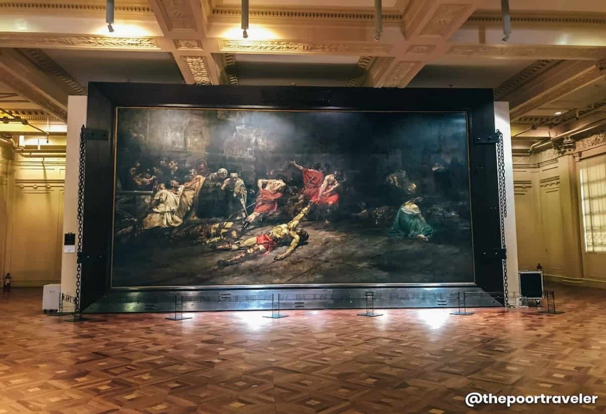

The National Museum of Fine Arts is home to 29 galleries and hallway exhibitions comprising of 19th century Filipino masters, National Artists, leading modern painters, sculptors, and printmakers. Also on view are art loans from other government institutions, organizations, and individuals.
The National Museum of Fine Arts is a branch of the National Museum of the Philippines located in Manila. It is dedicated to the preservation and promotion of Philippine art and cultural heritage. Here are some of the things that make the National Museum of Fine Arts special:
Collection: The museum has an extensive collection of Philippine art, including paintings, sculptures, and other visual art forms. The collection includes works by some of the most significant Filipino artists, both past and present.
Exhibits: The museum has a range of exhibits that showcase the evolution of Philippine art, from pre-colonial to contemporary times. These exhibits provide visitors with insights into the country's rich artistic heritage and cultural identity.
Educational Programs: The museum offers educational programs that cater to students and the general public. These programs include guided tours, lectures, workshops, and interactive activities that promote art appreciation and cultural awareness.
Location: The museum is located within the Rizal Park Complex, a prime location in Manila that is easily accessible from other major tourist destinations.
Architectural Design: The building that houses the National Museum of Fine Arts is a beautiful example of neoclassical architecture. Its grand staircase, columns, and other design elements create a stunning backdrop for the art on display.
Overall, the National Museum of Fine Arts is a must-visit destination for anyone interested in Philippine art and cultural heritage. Its extensive collection, educational programs, and unique architectural design make it a valuable resource for both locals and tourists.